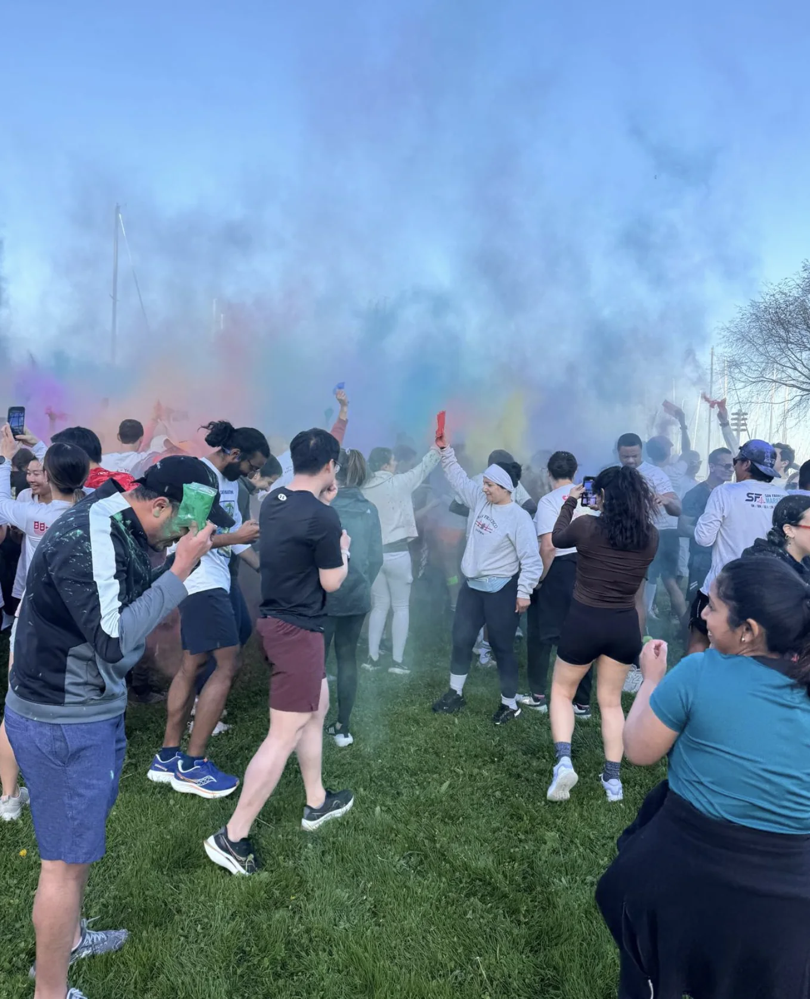
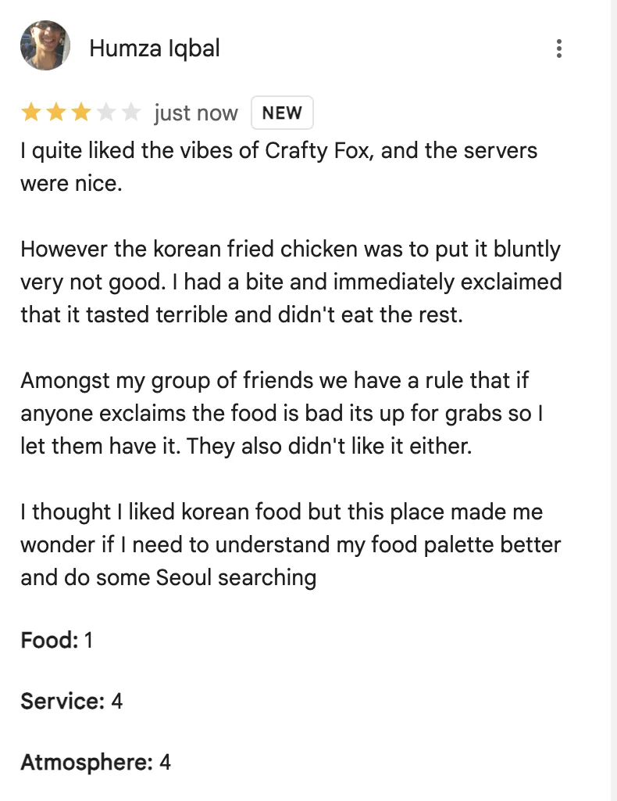
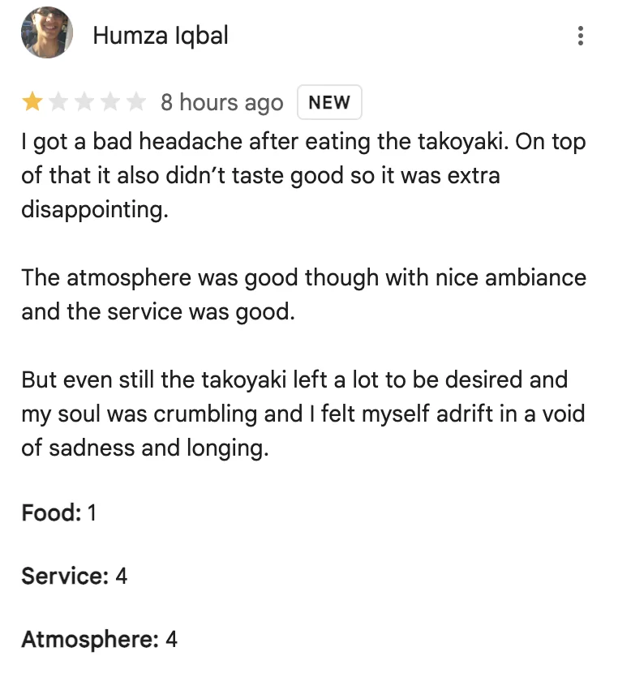
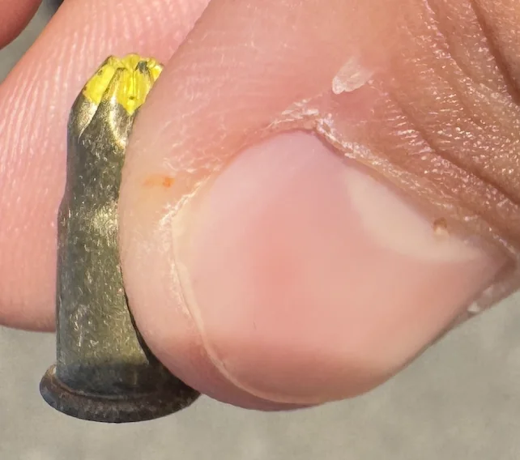
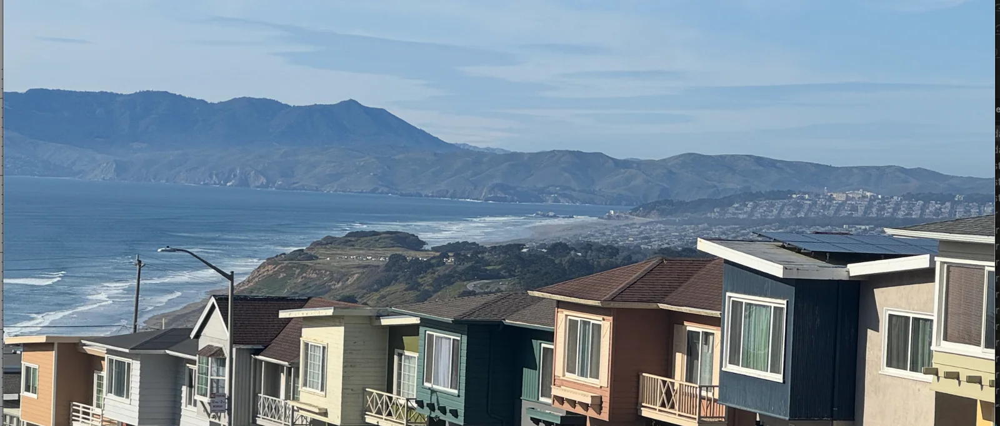

Tuesday
Today is a pretty ordinary day. After work I work on v2 of the date me flyers I hung up last week
Wednesday
After work I go to run club.
This run club is a bit special as its a Holi run. More specifically we celebrate Holi by throwing color packets at each other for a while before doing the run.

During run club I make the bold choice to try running a mile backwards. In the past I’ve tried running short bursts backwards on the order of 30-40 feet but this time I decided to try running backwards for a whole mile. It turns out humans are naturally built to run forwards and running backwards expends a lot more energy and uses completely different muscles I’m not used to exercising.
At this point I’ve run enough that running a mile at Midnight Runners wouldn’t be enough to make me tired but running backwards the whole time manages to do the trick. On top of that I finish near the bottom of the pack (only one or two people were behind me which is much worse than my usual performance).
I was hoping I could do another mile backwards as well but my calves weren’t feeling it. I did finish the run backwards though which is something. I may try doing this more to get to the point where running backwards isn’t too bad for me and perhaps I could finish middle of the pack while still running backwards.
After the run I hang out with folks at the bar. Unfortunately its pretty loud and at one point I mean to tell someone that she looks really sold on something but it came out as she looks “so old”. This leads her to shove her ID in my face which I found kinda funny.
Thursday
After work I hang out at The Crafty Fox with some friends. Unfortunately I get really hungry and proceed to order some food. I wanted to hold out and eat when I got home but the pressure was too much. I then proceed to have some of the worst Korean Fried Chicken I’ve ever had. It was absolutely terrible. So terrible I left a Google Maps review of The Crafty Fox

After that we play a card game called Durak. It would have probably been a fun game if I wasn’t tired as heck so I come up with the galaxy brain strategy of throwing the game to get it over with sooner. From there I head home and crash.
Friday
After work I host a board game and pasta night over at the Humza cave.
Thanks to my new couch I’m able to host a record number of people with 9. Unfortunately my place is still too small to invite all the friends I’d like to and for the first time in a while I wonder what it would be like to have a bigger place. Of course at the same time I struggle to think what board games I could play if I invited everyone I wanted to so perhaps 9-10 is a good size anyway. It makes me sad because I really want to have an event where I can invite all my friends at once and do something big. I do have something like that in mind for my birthday coming up at the end of next month but I’m still finalizing the details for that.
We play a few different games. Chameleon starts us off with some light social deduction and ice breaking. After that we get to the main course of Secret Hitler. I really like social deduction games that you can play for half an hour to an hour at a time and this is certainly no exception. I have a bit of a funny story with this game as at one point I was talking about it at a cafe with some folks and at one point I said “During this one game I was Hitler”, and I made the unfortunate mistake of saying this next to a woman who grew up in post WWII Germany and she proceeded to come up and lecture me about how awful that was and how she knew a bunch of people with missing limbs from the war and that lots of people like to say its cool to be Hitler these days. I thought about trying to explain the situation but I didn’t think she would quite understand so I just apologized awkwardly and moved on.
While playing I make the bold strategy of declaring myself to be Hitler while being a liberal. I thought somehow I could finagle events to my favor but unfortunately it proves to be for naught as the liberals lose. During the next round I actually draw a Fascist card and play a 4-d chess move to win.
Finally we end the night with a get to know you type game called hella awk in which you ask personal questions to the whole group and get to know each other. Example questions include things like “Would you move across the country for your partner?”, “What does love mean to you?” and things like that.
I also make my lamb pasta as per usual. I worry that I should start learning to cook more things as the guests might get tired if I make the same thing all the time.
Saturday
Today starts with trash pickup as per usual. I try again to roll out the automated route assignment stuff but unfortunately my strategy of deploying right before I leave the house means that there are some bugs so we have to fall back to the original system. It was quite sad when my co-organizer told me that the bugs now defeat the purpose and I saw him go back to the old way of assigning routes. Hopefully next week it just works and we can roll this out to other trash pickups.
After trash pickup I head to the South Bay to see an old manager of mine. It turns out one of my trash friends is also going to the South Bay so we take the Caltrain together. While on the Caltrain we have an interesting conversation about life. We talk about the idea of progress and how much you need to be changing your life. He mentions that my life has stayed relatively constant these last few years. Personally thats not something I have a problem with as I enjoy my life but it is interesting to hear other perspectives. According to his value function he really wants to be progressing and changing constantly, always thinking about if the future is better and how he can progress towards that. I respect that mindset, and while I don’t agree with the exact weighting of present vs future it does make me think about whether or not I should be changing more things in my life. So far this year I’ve been dieting, gotten a new job, and been hosting more. But I wonder what else I can change. What else should I change?
From there I head off to meet with my old manager. Upon meeting him one of the first things he said to me is that I look like I have a lot more soul in my body. The last time I saw him was December of 2023 so since then I’ve been dieting and I shaved my beard. He was impressed to hear that I don’t just eat burgers anymore and that I have a couch in my apartment. It was funny to hear that he already knew I left my old job based on other people talking about it. I always underestimate just how quickly word can spread.
I also get to see his cute 8 month year old baby. To be honest I’m not generally a huge fan of babies but she was really cute! I wore my chastity hat today especially in the hopes that she would like it but unfortunately it seems 8 months is too young to really notice. Seeing her did make me think more about wanting to start a family some day and have Humzlings of my own.
We talk a lot about AI stuff naturally and he gives me good advice as per usual. Of all my former managers he is the one I look up to the most and whose advice I am the most interested in. I mention that I’m not sure my new job will be my forever job and that I should perhaps do some side projects but he tells me that I should focus on my current job and just do that but in a few months if I still feel this way I should start interviewing. He also mentions if I interview I should really prepare, especially if I want to try for the hard places like OpenAI (where he now works). The last time I interviewed at OpenAI (back in 2023), I really didn’t prepare enough. We shall see what the future holds.
We go for a walk where we run into the head of security of OpenAI and the now former head of post training there. I notice that the second guy was talking to someone who turns out to be Jeff Dean. Palo Alto truly is a crazy place.
After catching up I head back down to SF and to GGP to meetup with some of my other friends. While on the Caltrain from Palo Alto to SF I make the decision to quit being an organizer for the South Mission trash pickup. There are a number of reasons both big and small for this. I think the biggest reason is that I found myself getting bored of being an organizer pretty much every week for the last 2 years. Doing a lot of the organizational stuff started to weigh on me and I found myself passing more and more of it to my co organizer so I realized today may just be the day to pass it on. There are other pettier reasons too but I’m not gonna describe them here. Who knows maybe over time I may change my mind and come back to it but for now I think I’m not gonna do it.
Once I get to GGP we hang out and bask in the sun for a while before heading to Bon-nene for dinner which … well we shall get to that in a bit.
On the way to Bon Nene one of my friends tells me about a mobile game he is playing now called Cookie Run Kingdom. Its a role playing and city building game set in a world with sentient cookies. For a game centered on cookies it has surprisingly deep lore. I’m not gonna go into all of what he told me here but the short version is there is a cult called St. Pastry order that discovers the truth about cookies (ie that they are meant to be eaten), and try to come up with a sacrifice ritual for cookies. This causes a lot of strife amongst the cookies and they start fighting amongst each other. There are such characters as White Lily cookie, Dark Cacao cookie, and a bunch of others. I never thought someone could go into so much lore about cookies and listening to my friend explain this really boggles my mind. Hearing this makes me think someone has too much time on their hands.
While this is happening we get to Bon-nene and get ready to eat there. Sadly the menu doesn’t have anything that would make me want to cheat on my diet so I do my best not to eat. Unfortunately I get really hungry and bolt to the Mexican place to get an ultimately mid taco. It wasn’t terrible but not great either. Interestingly my friends wanted me to try to hide it from the waiter when I eating my taco. I’m not really sure why but I guess they have their reasons. The mid taco is not enough for me so I cave and have some takoyaki and boy was that a mistake. It was truly terrible and a real low point. So much so that I leave a Google Maps review for Bon Nene as well

Sunday
Today starts off with trash pickup as per usual. After trash pickup I go down to Daly City with a friend to peruse the new Korean market there called Jagalchi. Jagalchi is pretty interesting. They have lots of different types of Korean food from meats, to salads, to pancakes, and a whole lot more. I get some fried chicken there which is actually ok (not great but by Craft Fox standards amazing). If you’re into Korean food I recommend checking out this market!
We then go for a long walk back to SF. While on this walk we find a couple interesting things including a bullet

And a great view close to Pacifica

While walking through I realize that a lot of people don’t explore SF to its full potential. There are a lot of interesting neighborhoods beyond the standard ones most people check out. I bet most of you reading this haven’t been to such places as Excelsior, Crocker Amazon, St. Francis etc. Theres a lot of hidden gems here and a lot of ways to go somewhere different than the standard SF experience.
This is part of why I think traveling is overrated in our society. I could go on a whole rant about this but the parts relevant to this argument are that I think a lot of people travel to have some sense of change in their lives when its really easy to do that without needing to even leave the city. It feels like leaving a lot on the table. Adventure is out there! No, not across the ocean but right here in good ol San Frisco.
And yes I am aware there are other reasons people may want to travel that you can’t satisfy through what I’m suggesting but thats why I’m saying overrated and not completely useless. And if you’re my one friend reading this who really does actively try to understand other cultures and people while traveling I’m pretty sure you’re the exception not the rule.
After making it back to SF I go home and write up the newsletter.